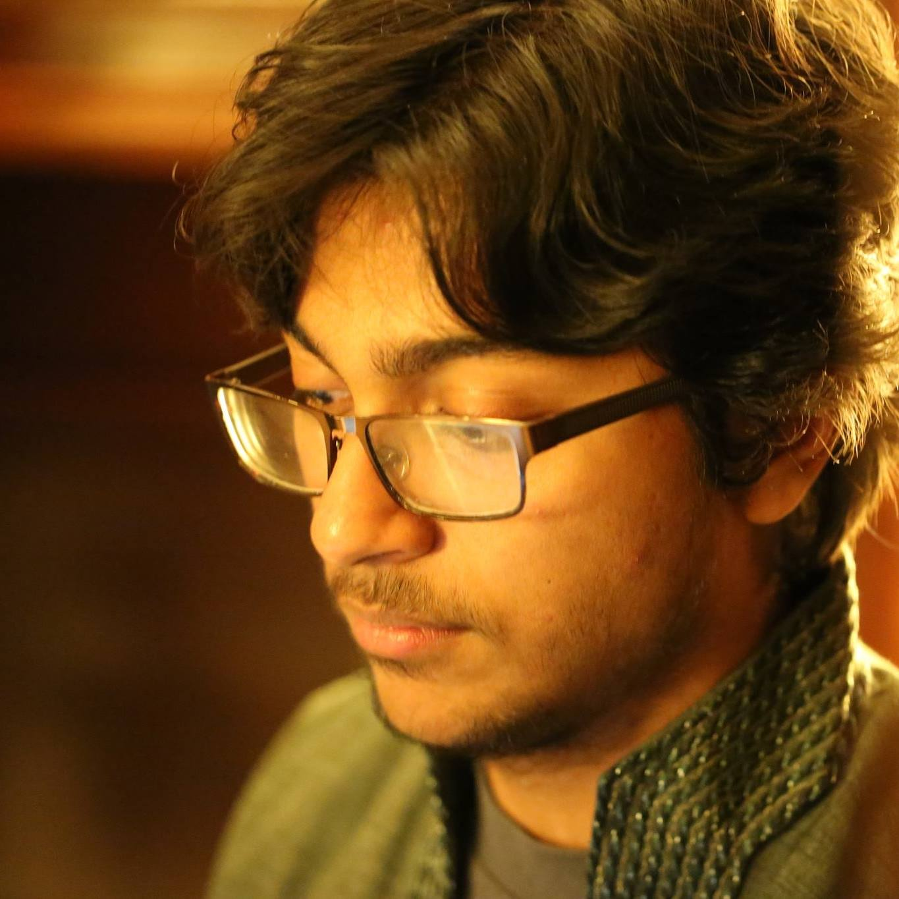

Hi there, I'm Tuneer Mondal!
I am in the Honours Mathematics Program (BMath) at the University of Waterloo. <\p>

Math is my primary passion, often finding its way into other aspects of my life, from playing games to making important decisions. I plan to pursue a Joint degree in Combinatorics and Optimization, and Computer Science.
I love logic puzzles, such as the Rubik’s cube, chess, and sudoku. When I’m lazy, I try to find mathematical formulas or develop computer programs to solve them.
I love music. I play the guitar and self-taught (probably improperly) myself the keyboard/piano. I whistle too often (at least people know when the bathroom is occupied). I like to listen to rock, pop, classical, and Bollywood music. I also enjoy dancing, of which my favourite styles are freestyle, shuffling, hip hop, and Bollywood.
My favourite sports are table tennis, biking, swimming, and running. I am proficient in none, but they help me relax. I also have a passing interest in photography and pencil sketching…
Ultimately, I want to make a positive impact on society. Whether it be through innovations, philanthropy, or getting my hands dirty, my life will feel empty and unfulfilled otherwise.